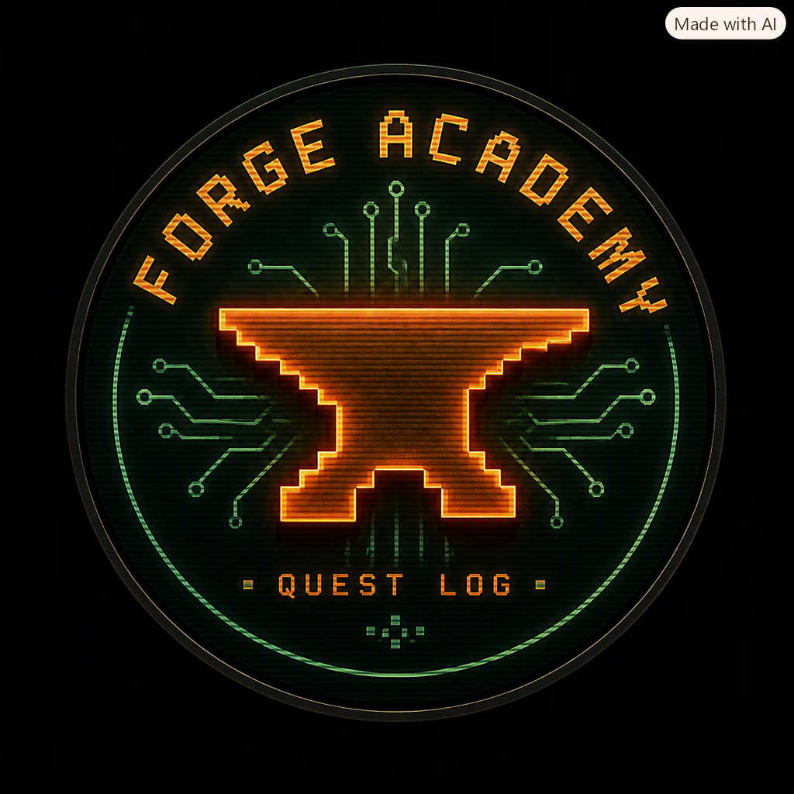

Forge Academy
Sign in with your Momma Money account to sync Anna & Ryan's progress.
Log In

Forge Academy | Quest Log
Forge Academy — Student Portal · part of the
Momma Money
family
Today
Planner
Library
Arena
Leader